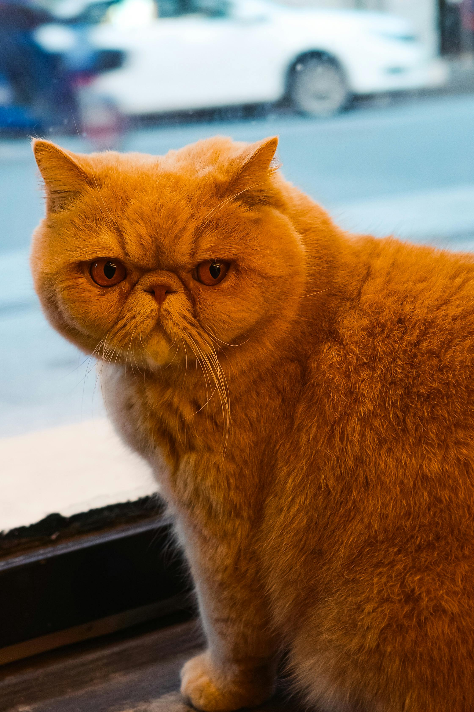

The Persian cat is a longhair with a very fine and long coat. This cat is rather playful and they are also very easygoing and calm. Due to their very long fur, they require a whole lot of grooming. They have a flat face, with round cheeks and large round eyes making them easily recognizable compared to some other breeds.
